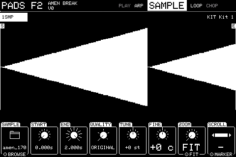
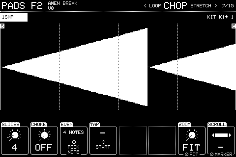
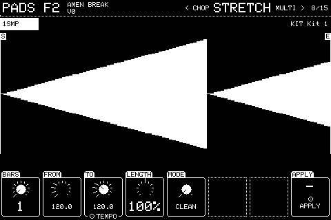
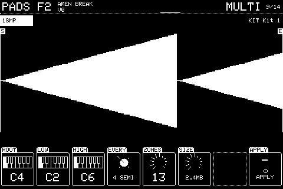
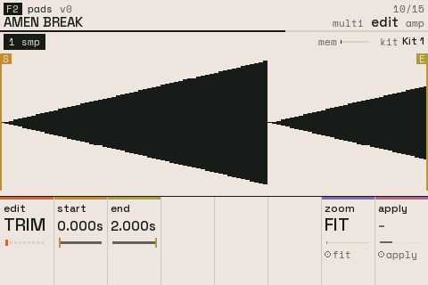
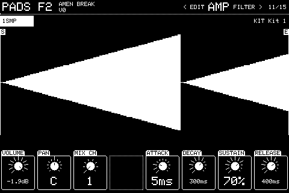
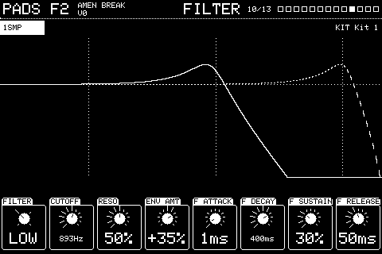
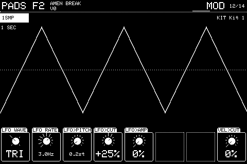
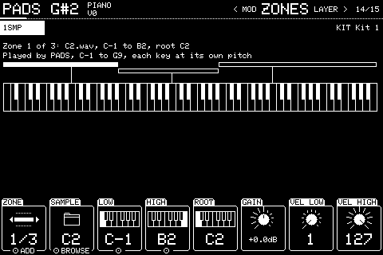
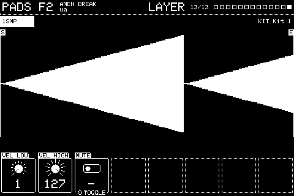

Chapter 3
Sample action
3.1 SAMPLE
NEXT from ARP, with a sample action picked.

The sample and the part of it that plays, over its waveform. With zones, these settings belong to the zone shown on ZONES and carry a Z1, Z2 tag.
QUALITY trades fidelity for memory, for every sample the action plays, its zones too: ORIGINAL; HIGH, mono (half the memory); MEDIUM, mono 8-bit mu-law (a quarter); LOW, the same at half the rate (an eighth); LO-FI, at a quarter of the rate (a sixteenth). The lower tiers are also a sound: grainy and dark, like the early samplers. The card keeps the original, so turning back to ORIGINAL brings it all back. Anything below ORIGINAL is held whole in memory.
| Knob | Setting | Turn | Push |
|---|---|---|---|
| 1 | SAMPLE | Steps through the samples already loaded | Opens the browser to pick a WAV from the card |
| 2 | START | Where it starts playing; finer steps when zoomed in, and with Shift | |
| 3 | END | Where it stops | |
| 4 | QUALITY | ORIGINAL, HIGH (1/2), MEDIUM (1/4), LOW (1/8) or LO-FI (1/16), shown with the memory each keeps | |
| 5 | TUNE | -48 to +48 semitones | |
| 6 | FINE | -100 to +100 cents | |
| 7 | ZOOM | Magnifies the waveform round the marker edited last | FIT: the whole sample again |
| 8 | SCROLL | Moves the zoomed view without moving a marker; the bar shows where the view is | MARKER: follow the marker again |
Knobs not listed do nothing here. Shift + push puts most settings back to how a new one has them.
3.2 LOOP
NEXT from SAMPLE.
| Knob | Setting | Turn | Push |
|---|---|---|---|
| 1 | LOOP | OFF, FWD (round and round) or PING (back and forth). On a streamed sample this loads it into memory, or says it won't fit | |
| 2 | LP START | Where the loop starts | |
| 3 | LP END | Where it ends | |
| 4 | REVERSE | Plays it backwards. On a streamed sample this loads the region into memory, or says it won't fit | Toggles |
| 7 | ZOOM | As on SAMPLE | FIT |
| 8 | SCROLL | As on SAMPLE | MARKER |
Knobs not listed do nothing here. Shift + push puts most settings back to how a new one has them.
3.3 CHOP
NEXT from LOOP.

Makes copies of this slot, each playing one slice of START to END, on consecutive notes.
| Knob | Setting | Turn | Push |
|---|---|---|---|
| 1 | SLICES | How many equal slices EVEN makes, 2 to 16 | |
| 2 | CHOKE | The choke group the slices go in, so each cuts the last | |
| 3 | EVEN | Then play a note: SLICES equal slices on consecutive notes from there | |
| 4 | TAP | Plays the sample; each note you tap starts a slice there. Any button ends tapping | |
| 7 | ZOOM | As on SAMPLE | FIT |
| 8 | SCROLL | As on SAMPLE | MARKER |
Knobs not listed do nothing here. Shift + push puts most settings back to how a new one has them.
3.4 STRETCH
NEXT from CHOP.

Changes how long START..END lasts without changing its pitch, so a break at one tempo plays in time at another. Say how many bars it is, set TO, pick a MODE, and push APPLY. BARS starts as a guess from the length alone: 1, 2, 4 or more bars, whichever gives a tempo between 70 and 180 BPM (of two that do, the nearer the project's). Turn it if the guess is wrong; FROM follows.
CLEAN cuts the sample at its hits. Each slice starts where the new tempo puts its hit, plays its first 25ms untouched, and has only the rest stretched to fill up to the next hit, so drums stay tight with no gaps or doubled hits. Long tonal sounds can warble near the ends of the range.
CYCLIC is how older Akai samplers stretched: the sample is cut into grains CYCLE long, and each grain repeats, crossfaded, until its time is up. Pushed far, the repeats ring with a metallic tone at the grain rate: the 90s hardcore and jungle sound. Short grains buzz; long ones stutter.
The stretch is rendered as a new sample, saved in /stretched named after the file and the tempo, and swapped in for this sample: the original file stays on the card. Loop points move with it. UNDO puts the original back, markers and all, and Shift + UNDO the stretch again; if a pattern was edited since, UNDO takes that first. It renders a piece at a time while everything keeps playing. It works from 50% to 200% of the length, on a sample action without zones.
| Knob | Setting | Turn | Push |
|---|---|---|---|
| 1 | BARS | How many bars START..END is, 1 to 64; guessed until turned | |
| 2 | FROM | The tempo that makes it that long | |
| 3 | TO | The tempo to stretch it to; Shift for 0.1 BPM steps | TEMPO: back to the project's |
| 4 | LENGTH | How long it will be, as a share of now | |
| 5 | MODE | CLEAN or CYCLIC | |
| 6 | CYCLE | CYCLIC's grain, 5 to 100ms | |
| 8 | APPLY | Shows how far it's got | Stretches it and swaps it in |
Knobs not listed do nothing here. Shift + push puts most settings back to how a new one has them.
3.5 MULTI
NEXT from STRETCH.

Turns one note into a multisample, so a sample plays at its own length on every key rather than speeding up as it goes higher. Set ROOT to the note the sample is (it starts at the slot's ROOT), LOW and HIGH to the range, and EVERY to how far apart the renders are, then push APPLY.
Each note is rendered at its pitch and the original length (stretched, then resampled), saved in /multisamples, named after the file and the note (the root note too, as it is, so the folder stands on its own), and the sample becomes zones: each takes the keys nearer its root than its neighbours'. Spread on ZONES loads such a folder into any slot. Each zone keeps the action's markers, loop, tuning and level. UNDO puts the single sample back; Shift + UNDO the zones again.
Far from the root a render takes on the shifted character, bright up high and thick down low, so the range reaches two octaves either side at most. Closer renders keep every key nearer its true length: every 4 semitones, no note is more than about 12% off. ZONES and SIZE show how many renders and how much memory they'll take at the action's QUALITY; lower it to fit more.
| Knob | Setting | Turn | Push |
|---|---|---|---|
| 1 | ROOT | The note the sample plays at its own pitch | |
| 2 | LOW | The lowest note to cover, down to two octaves under ROOT | |
| 3 | HIGH | The highest note, up to two octaves over | |
| 4 | EVERY | How far apart the renders are: 3, 4 or 6 semitones, or an octave | |
| 5 | ZONES | How many zones that makes | |
| 6 | SIZE | The memory they'll take at the action's QUALITY | |
| 8 | APPLY | Shows how many are done | Renders them and swaps them in as zones |
Knobs not listed do nothing here. Shift + push puts most settings back to how a new one has them.
3.6 EDIT
NEXT from MULTI.

Edits the part of the sample between START and END. Pick what to do with EDIT, set START and END (the same markers as on SAMPLE), then push APPLY.
TRIM keeps only START..END. DISCARD cuts it out and joins what's either side with a short crossfade. SILENCE, GAIN, NORMALISE (loudest point to just under full scale), REVERSE, FADE IN and FADE OUT change START..END and leave the rest. SNAP moves START, END and the loop points to the nearest place the waveform crosses zero, within 10ms, so it starts, stops and loops without a click.
Each edit is saved in /edited as a new file (kick-1, kick-2 and so on) and swapped in for this slot only; the original stays on the card, and any other slot using it keeps it. After TRIM or DISCARD, START and END take in the whole new sample; after the others they stay put, so you can fade or gain the same part again. Loop points move with the audio. UNDO puts the last edit back, Shift + UNDO does it again. It works on a sample action without zones, and renders a piece at a time while everything keeps playing.
| Knob | Setting | Turn | Push |
|---|---|---|---|
| 1 | EDIT | What APPLY does: TRIM, DISCARD, SILENCE, GAIN, NORMALISE, REVERSE, FADE IN, FADE OUT or SNAP | |
| 2 | START | Where the part to edit starts | |
| 3 | END | Where it ends | |
| 4 | GAIN | For GAIN: how much louder or quieter, -24 to +24dB | |
| 7 | ZOOM | Magnifies the waveform around the marker last moved | FIT |
| 8 | APPLY | Shows how far it's got | Does it |
Knobs not listed do nothing here. Shift + push puts most settings back to how a new one has them.
3.7 AMP
NEXT from CHOP.

The volume envelope, drawn above, and where the sound goes.
| Knob | Setting | Turn | Push |
|---|---|---|---|
| 1 | VOLUME | Level in dB, OFF at the bottom | |
| 2 | PAN | Left to right | |
| 3 | MIX CH | Which of the 8 mixer channels it plays through | |
| 5 | ATTACK | Time to full level | |
| 6 | DECAY | Time down to the sustain level | |
| 7 | SUSTAIN | Level while held, 0 to 100% | |
| 8 | RELEASE | Time to fade after letting go |
Knobs not listed do nothing here. Shift + push puts most settings back to how a new one has them.
3.8 FILTER
NEXT from AMP.

A filter with its own envelope, in the same order as AMP's. The picture shows its response.
| Knob | Setting | Turn | Push |
|---|---|---|---|
| 1 | FILTER | OFF, LOW pass, HIGH pass or BAND pass | |
| 2 | CUTOFF | The cutoff frequency | |
| 3 | RESO | Resonance, 0 to 100% | |
| 4 | ENV AMT | How far the envelope moves the cutoff, -100 to +100% | |
| 5 | F ATTACK | The filter envelope's attack | |
| 6 | F DECAY | Its decay | |
| 7 | F SUSTAIN | Its sustain level | |
| 8 | F RELEASE | Its release |
Knobs not listed do nothing here. Shift + push puts most settings back to how a new one has them.
3.9 MOD
NEXT from FILTER.

An LFO and where it goes, drawn over one second, plus velocity to cutoff.
| Knob | Setting | Turn | Push |
|---|---|---|---|
| 1 | LFO WAVE | SINE, TRI, SQUARE or SAW | |
| 2 | LFO RATE | 0.05 to 30Hz | |
| 3 | LFO>PITCH | Vibrato depth, up to 24 semitones | |
| 4 | LFO>CUT | How far it moves the filter, -100 to +100% | |
| 5 | LFO>AMP | Tremolo depth, 0 to 100% | |
| 8 | VEL>CUT | How far playing harder opens the filter, 0 to 100% |
Knobs not listed do nothing here. Shift + push puts most settings back to how a new one has them.
3.10 ZONES
NEXT from MOD.

Several samples across the keys, each with its own range and root (keygroups). Only one zone sounds per note. The slot keeps one PITCHED assignment covering every zone's keys on the device chosen with KEYS.
While you play, a bar under the keyboard marks each zone sounding, and the line below names its sample.
SPREAD gives every zone the action's loop, direction, tuning, level and pan, so a MULTI folder loaded into another slot plays as it did where it was made.
| Knob | Setting | Turn | Push |
|---|---|---|---|
| 1 | ZONE | Which zone is shown | ADD a zone; Shift + push removes the one shown |
| 2 | SAMPLE | The zone's sample | Browse for its WAV. Shift + push and pick any WAV: SPREAD makes a zone of every WAV in its folder |
| 3 | LOW | The zone's lowest note | PLAY KEYS: play the two ends of the range |
| 4 | HIGH | Its highest note | PLAY KEYS |
| 5 | ROOT | The note it plays at its own pitch | |
| 6 | GAIN | Its level against the other zones | |
| 7 | VEL LOW | The softest velocity it answers to | |
| 8 | VEL HIGH | The hardest |
Knobs not listed do nothing here. Shift + push puts most settings back to how a new one has them.
3.11 LAYER
The last page (Shift + NEXT).

Which velocities this action answers to, so a slot's actions can be layered or switched by how hard you play.
| Knob | Setting | Turn | Push |
|---|---|---|---|
| 1 | VEL LOW | The softest velocity that plays this action | |
| 2 | VEL HIGH | The hardest | |
| 3 | MUTE | Silences this action only | Toggles |
Knobs not listed do nothing here. Shift + push puts most settings back to how a new one has them.